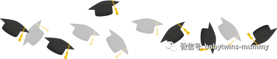
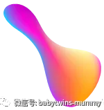

孖仔帮
汇集全国各地及海外的双胎妈妈的交流园地
专门针对双胎孕期，喂养，教育等方面的经验分享
孖仔帮期待您的加入！
让我们一起成长，快乐育儿！
昨天听闻一个小学同学，试管终于成功，已经6周了，且是双胎均存活。
我替她高兴，因为这位“拼命三娘”为了拼事业，结婚8年还没一儿半女，等到要孩子的时候，已经高龄妇女了。自然受孕不成功的前提下，只好走试管这条路，但是也不顺畅，经历了前后三次痛苦的尝试，这一次终于成功了！
她发来微信怂我说：这下我可够格进孖仔帮妈妈群了吧！哈哈！”
我祝福她终于如愿以偿，但是又替她捏把汗。
须知试管双胎，可不是闹着玩的啊！
下面转载一则广医三院的科普新闻给各位双胎宝妈，
试管双胎的宝妈尤其要划下重点。
导言：广医三院胎儿医学中心副主任陈敏表示，“试管双胎”的问题绝大部分在妊娠中期甚至早孕期就已经开始，而孕妇因没有一点不适，而全然不知宝宝已经危在旦夕。
医学指导：广州医学院第三附属医院胎儿医学中心副主任 陈敏博士
很多孕妇认为怀上双胞胎是很幸运的事情，甚至服用“多仔丸”以求双胎。事实上，无论自然受孕双胎还是“试管双胎”，都可以导致很多妊娠并发症，意味着胎儿流产、早产、死亡、生长发育、结构异常、唐氏综合症的风险大大增加。
然而，目前不孕在育龄夫妇中的发生率已超过10％，随着试管婴儿技术的快速发展，多胎妊娠在大量增加。该如何为“试管双胞胎”保驾护航呢？
广医三院胎儿医学中心副主任陈敏表示，“试管双胎”的问题绝大部分在妊娠中期甚至早孕期就已经开始，而孕妇因没有一点不适，而全然不知宝宝已经危在旦夕。
所以，孕妇怀孕后应尽早（6～8周左右）接受检查，如果发现为多胎妊娠，就更应该尽早检查。
早孕期（11～13周）：查绒毛膜性
孕妇在早孕期要确定胚胎的数量和绒毛膜性（是单绒毛膜双胎还是双绒毛膜双胎），“因为，绒毛膜性是确定妊娠结局的重要因素，只能够在早孕期进行，孕11～13周是检查的最佳时间，一旦错过这个时期就很难鉴别。”陈敏说。
一旦孕妇孕中期出现问题，如一胎畸形需要减胎时，检查好了绒毛膜性，就能决定是否能够减胎以及如何减胎。此外，早孕期确定是否为单绒毛膜双胎，就可以同时对双胎输血综合症进行预测，预测是否会发生可怕的双胎输血和选择性宫内发育不良等问题。
早孕期：妊娠染色体筛查
陈敏表示，早孕期是双胎妊娠染色体异常筛查最准确的时间，因为单纯母亲血液的唐氏筛查是无法判定哪个胎儿是高风险，而早孕期通过NT筛查和其他与胎儿相关数据的检测，就可以判定哪个胎儿是高风险，进而进行进一步的确诊。
孕16周：接受第二次超声检查
早孕期明确是否为多胎以及哪种类型的多胎后，应该在孕16周接受第二次超声检查，此时很多双胎妊娠并发症可以得到明确的诊断，尤其是双胎输血综合症可以明确诊断，并及时接受治疗或减胎。如果错过此时机，双胎输血综合症发展到晚期就失去了治疗的机会。
孕26周前：每1～2周接受一次超声检查
无论早期和孕中期的早期检查是否有问题，多胎妊娠都应该在26周前每1～2周接受一次超声检查，以便于及时发现异常情况。“因为，一般妊娠超过26周后，情况会逐渐稳定，基本上不会出现双胎输血综合症等严重的并发症。”陈敏说。
如在此期间诊断为双胎输血综合症，应该及时接受治疗，越早越好。陈敏介绍道，目前国内真正可以做胎儿激光手术并能够在术后对胎儿进行充分监护的医院寥寥无几，孕妇要慎重选择接受治疗的医院。
多胎妊娠的并发症
1.流产
单胎妊娠中，孕11～13周检查时若显示胎儿存活，随后于孕24周前发生流产或胎儿死亡的几率只有1％；而双绒毛膜双胎发生胎儿丢失率为2％，单绒毛膜双羊膜囊双胎发生胎儿丢失率约10％。
2.围产期死亡率增高
单胎妊娠的死亡率约0.5％；双绒毛膜双胎死亡率是2％，单绒毛膜双羊膜囊双胎是4％，导致双胎死亡率增加的原因是早产。
3.生长发育受限
在单胎妊娠中，新生儿出生体重低于第5百分位数的发生率是5％，在双绒毛膜双胎中发生率是5％，而在单绒毛膜双羊膜囊双胎中是30％。
4.早产
在单胎妊娠中于孕24～32周发生早产的风险约1％；双绒毛膜双胎是5％，而单绒毛膜双羊膜囊双胎则是10％。
5.结构异常
单胎妊娠中胎儿结构异常的发生率约1％，双绒毛膜双胎中每个胎儿的结构异常发生率是1％，而在单绒毛膜双羊膜囊双胎中每个胎儿的发生率是4％。
6.染色体异常风险增加（尤其是唐氏综合症）
双绒毛膜双胎妊娠每个胎儿发生染色体异常的风险是单胎妊娠的两倍；单绒毛膜双羊膜囊双胎中，两个胎儿发生染色体异常的风险与单胎妊娠相同。
转载自：
广医三院【信息时报】“试管双胎”健康风险大
原文链接：http://www.gy3y.com/xwzx/mtjj/a_101129.html
圆圈妈：资深屌丝女+腐女一枚，家有孖仔男两枚。
微信公众号ID：babytwins-mummy 孖仔帮
个人博客：双胞胎萌娃会（www.sgguy.com）
一个专注双胞胎群体的网站，每天分享亲子养育经验
目前孖仔帮建立了微信群
孖仔帮双胞胎孕期群&孖仔帮双胞胎养育群
家长们可以根据需要进入任意一个群
想要进入孖仔帮的微信群
可以加圆圈妈的微信。
由圆圈妈邀请入群
欢迎加入双胞胎大家庭
让我们一起学习成长，快乐育儿！
公众号：孖仔帮
ID:babytwins-mummy
个人博客: www.sgguy.com
一个专注双胞胎群体的育儿网站
点击下方“阅读原文”，可直接进入博客网站





